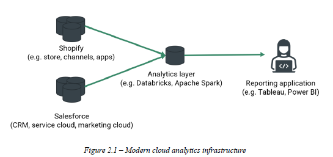
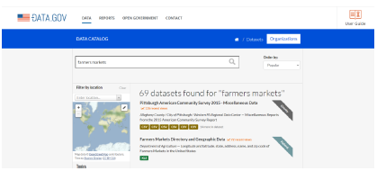
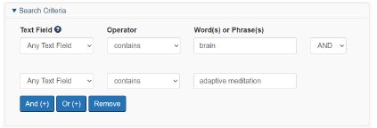

5 Assessing data
This chapter is taken integrally from Chapter 2 of the Snappy Data Management textbook by Colin Conrad.
5.1 Cleaning: data is messy
Data may be transforming everything about our lives, though it is amazing how little the public knows about it. In 2012, analysts estimated that 90% of the world’s data had come into existence in the previous two years (Ridsdale et al., n.d.), and by 2019 the World Economic Forum estimated that there were 44 zettabytes of data in existence, which is around 40 times more bytes than there are stars in the observable universe (Saha 2019). It’s almost as if the amount of data being generated is expanding faster than the universe.
But why is this the case? Why is there so much data being generated, and so quickly? In the previous chapter, we discussed how a prior explosion of software has fundamentally changed our society. With the advent of the software revolution, and especially mobile computing, there are now hundreds of thousands of sensors, processes, and devices generating data every second (Scoble, Israel, and Benioff 2014). Software has consumed our lives, and as a result, is generating unfathomable amounts of data.
From a manager’s perspective, the data that is usually most interesting to us are those data generated by our information systems. Whether these systems are e-commerce platforms like Shopify, customer-relationship management (CRM) tools like Salesforce, or enterprise resource planning (ERP) systems like SAP; data is being generated through our interactions with these systems. In the context of the 2020s, this data is not only being generated but is largely generated on the internet using cloud software. Gartner predicts that in 2023, the market for end users of cloud software will be just over $600 billion, representing almost 50% of all information technology spending (“Gartner Forecasts Worldwide Public Cloud End-User Spending to Reach Nearly $600 Billion in 2023,” n.d.).
One advantage of modern cloud computing is that it makes data highly accessible to managers who wish to use it. Supported by modern data exchange protocols, most enterprise applications seamlessly integrate with business intelligence software, including Excel, Power BI, and Tableau. Business intelligence is also usually supported through an intermediary analytics layer that is either maintained by an organization or is part of an enterprise software suite. Figure 2.1 illustrates this concept.

While modern technology is great, the ease of data exchange also raises new pressures on people who make data-driven decisions. Much of the data that is available to you will be formatted in ways that are difficult to interpret or with frustrating errors.
5.2 Data Integrity, Validation, and Cleaning
When data is created using an information system, such as Shopify, steps are often taken to ensure its integrity. For example, user identities are usually authenticated through secure web infrastructure, a username, a password, or another authentication process. Today, user identities are often managed through commercial identity access management cloud infrastructure, such as Okta’s Auth0 or Ping Identity. These operate behind the scenes in many enterprise information systems. Identity access management software helps ensure that data generated by the information systems accurately reflect a user’s activity. Similarly, if a cloud information system is configured correctly, it usually ensures data integrity with secure exchange protocols. Even if the right people are using a system and the system is secure, data can still be invalid. Data entered through a web form, for example, can be false. A user might also mistype an address or could, for example, input an avocado price of $10.10 instead of the $1.10 intended. A city field may be configured incorrectly to read Lüneburg (i.e., Germany) instead of Lunenberg (i.e., Canada). Systems can be configured to conduct automatic validation, though this can’t prevent all errors. In larger organizations that use more complex data resources (e.g., databases, repositories), data engineers and data analysts spend a lot of their time ensuring the integrity of data, so that the organization’s information is not flawed.
This is why it is very important to check and validate data before analyzing it. Some tangible steps that you can take to validate your data include:
- Identifying outliers; analyze the distribution to see if there are data that are way different from the others.
- Finding inconsistent or missing values; investigate the data manually or with an automated check to see if anything is missing.
- Have consistent encoding and formatting; determine whether there are inconsistencies in the way that the data are recorded.
- Common sense checks; ask yourself whether the values make sense based on the data description or metadata provided.
Once clean, it is a best practice to save cleaned data and keep it separate from raw data. Be sure to keep a record of how you created a clean dataset, or it will be very difficult to translate information about the cleaning to another person.
5.3 Open Data Sources and Data Credibility
Many organizations that generate data keep their data securely controlled and inaccessible to the public. There are many reasons for this, but one of the biggest is that knowledge is a strategic resource that gives companies a competitive advantage (Hult et al. 2006). Organizations may also wish to secure sensitive data to help protect their stakeholders’ privacy.
Yet, there is also a widespread movement to release data publicly. Often referred to as the open data movement (Baack 2015), many advocates believe that data should be publicly available to help advance education, accountability, and transparency. Throughout the 2010s and 2020s, governments have increasingly released data through their open data portals, while other organizations have often contributed their data to open data competitions such as those offered by Kaggle (“Competitions Documentation,” n.d.). These have offered new opportunities for people to learn data management, data science, and machine learning skills.
However, some data sources, even those offered through government data portals, may contain errors, omissions, or may be intentionally misleading. When working with data, it is essential to think critically about the source of the data and its credibility. One way to do this is to apply the CRAAP test, which is often used to ensure the credibility of information [18]. Before engaging with a dataset, ask yourself:
- Is this data current? Is it outdated, or has it been revised?
- How relevant is the data? Is the data well-suited to your analytical task? Is it too summarized, or overly verbose?
- Does the source of the data have a clear authority? Is there a clear and qualified author responsible for ensuring the data’s quality?
- Is the data accurate? Is the source of the data likely to be biased?
- Why does this information exist? Does the data have a clear purpose?
By answering these questions, we can mitigate the risk of generating misinformation or suboptimal decisions with inadequate data.
This exercise is taken integrally from Chapter 4 of the Snappy Data Management textbook by Colin Conrad.
5.4 Hands-on Exercise: Critically Assess Cloud Open Data
Two prominent trends in the public and academic sectors have been open government and open science. These trends rely on cloud infrastructure. Open government seeks to use digital and data resources to make government more accessible to everyone. Open science similarly seeks to make the process of science more transparent and trustworthy. These movements have fostered a vast number of new digital services and freely available data repositories. While it is useful to know about these resources, we can also critically assess them using the frameworks for cloud infrastructure discussed. In this exercise, we will explore several open data resources and explore ways of effectively using them.
5.4.1 Library data guides
Our first stop is Dalhousie University’s Data and Statistics Guide. Julie Marcoux, Dalhousie’s data librarian, maintains this handy guide, which you can find at: https://dal.ca.libguides.com/data.
The Data Guide provides links to many data repositories. Consider visiting some of these tabs. One resource that may be of particular interest is the Statistics Canada tab, which gives links to many of Statistics Canada’s free resources. We will explore these later in some detail, though consider ways that you might use these to make some sort of impact, whether for your benefit, or the world’s.
One idea may be to use Statistics Canada to inform where you would launch a coffee shop. You might consider:
Demographic trends for each region (e.g., with the Census dataset)
Growth in industries that are present in the desired city (e.g., with the Statistics Canada datasets)
Identify whether there is growth in imports of international coffee goods from some regions versus others (e.g., the Canadian International Merchandise Trade Database)
In addition, other public repositories are provided in this guide, most notably the government of Nova Scotia’s open data repository. Librarians at other universities and public librarians may make similar guides to help inform available data resources.
Consider the ways that a tool like a data guide might help improve data findability. The perceived ease of use of technology is a very well-studied predictor of technology acceptance and is part of one of the most widely discussed theories of technology behaviour. Does this guide make it easier to find information using open data repositories?
5.4.2 United States open data repository
A second interesting open data repository is the Government of the United States open data portal: https://data.gov
Though the Canadian federal government also maintains its own data portal, the US open data portal is on its level. As of July 2023, it indexed 254 716 datasets from all levels of government: federal, state, and municipal. You will almost certainly find something interesting using this data portal. Consider searching for “farmers markets” or searching using the following query in your browser: https://catalog.data.gov/dataset?q=farmers+markets
As you scroll down, you will quickly notice that some of these 69 datasets also provide JSON APIs. You could use these APIs to directly query the datasets, as well as create web applications that use or visualize the data.

5.4.3 Google’s data search tool
A third approach to discovering data is to use a search engine. You might have some luck plugging in queries such as “duck datasets” in regular Google, though you will probably spend a lot of time searching through irrelevant links. Instead, Google created a search index specifically for datasets. You can visit it at: https://datasetsearch.research.google.com
Unlike the curated guide and public data portal, Google is a search engine that will search through various repositories and resources from around the web. Try using this tool to search for interesting data, perhaps not about ducks this time. If you would like an example, try searching for something even more obscure and “un-datalike” such as “William Shakespeare”. You will find repositories containing data on his works and even the location of ongoing Shakespeare plays.
You can also use this tool to conduct targeted searches of specific government databases. For example, if you wished to find datasets related to “covid” on the Government of Nova Scotia’s site, you could query along the lines of:
covid:https://data.novascotia.ca/
This yielded me a very interesting dataset called “Applicants and Recipients of Small Business Impact Grant and Small Business Reopening and Support Grant,” which is very interesting from the perspective of the accountability of public funds. Google’s database search is a very powerful tool for finding open datasets. Consider the ways that you might use these to advance public knowledge, or perhaps to investigate which businesses received funding.
5.4.4 Canada’s patent database
Finally, it is important to note that though the open data movement is new, governments have been using databases to supply critical public information long before the trend. One great example has been the Canadian Intellectual Property Office, which has long provided a publicly accessible patent search database. You can find the database at: https://www.ic.gc.ca/opic-cipo/cpd/eng/introduction.html
This tool is designed to help entrepreneurs, inventors, businesspeople, and lawyers find patents that are relevant to their context. It is very important to be confident that an invention does not violate an existing patent.

One of the most useful features of this tool is the Boolean Search option. This uses Boolean logic operators (e.g. “and”, “or”) to help a user find patents based on specific keywords. Consider searching for patents based on “brain” AND “adaptive meditation”. Figure 4.4 - Keywords to include in the sample search You will probably find a few patents filed and owned by Interaxon Inc. (Canada), which makes the popular Muse headband, available in many electronics stores. Any researcher hoping to commercialize a meditation device would have to contend with these patents. Consider doing your query of possible innovations that are interesting to you. How does this type of database add value to Canada’s public service?